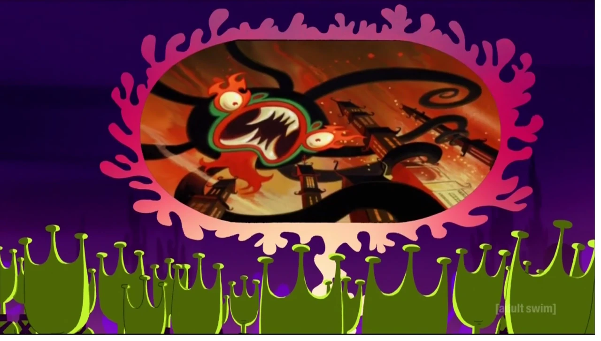
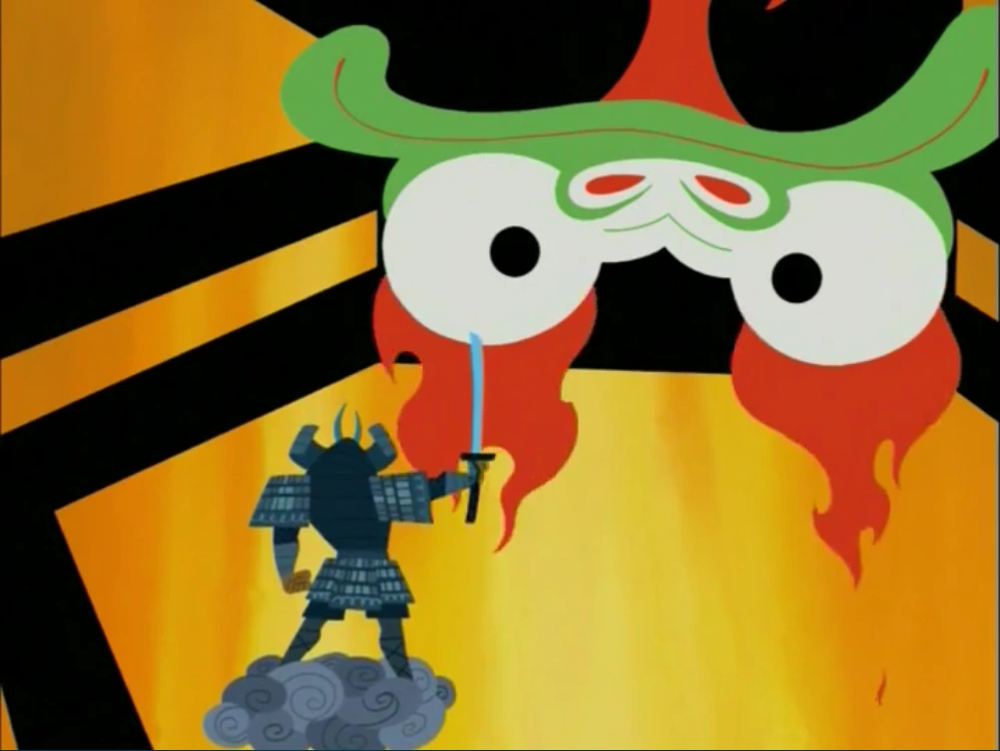
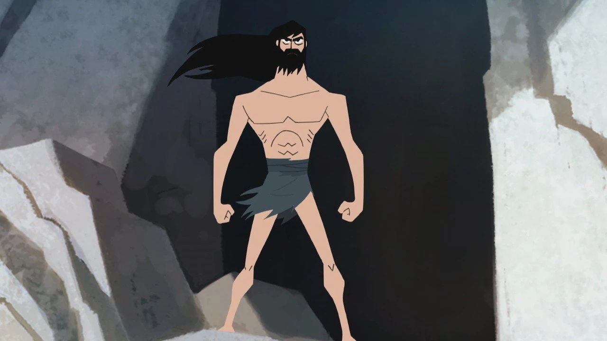
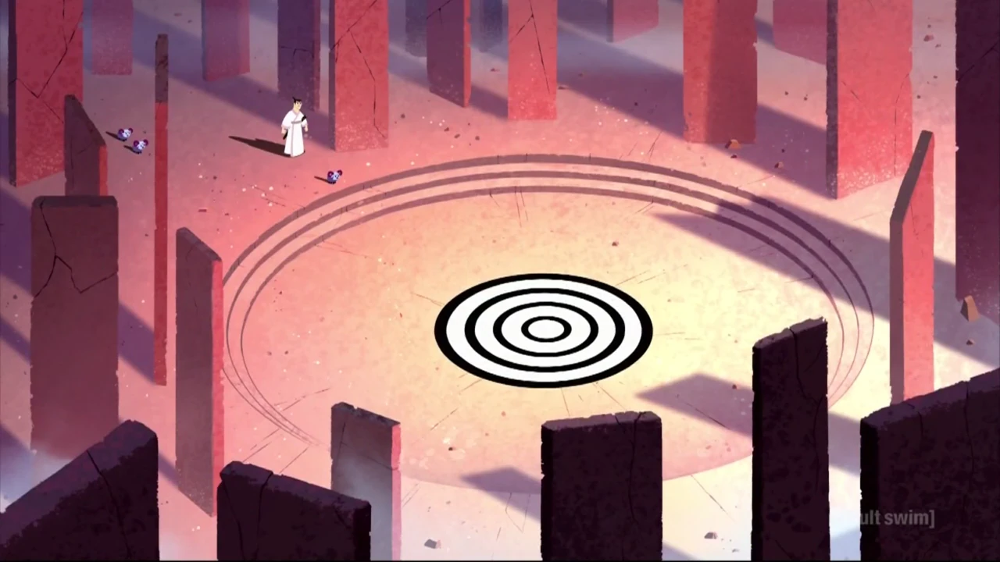
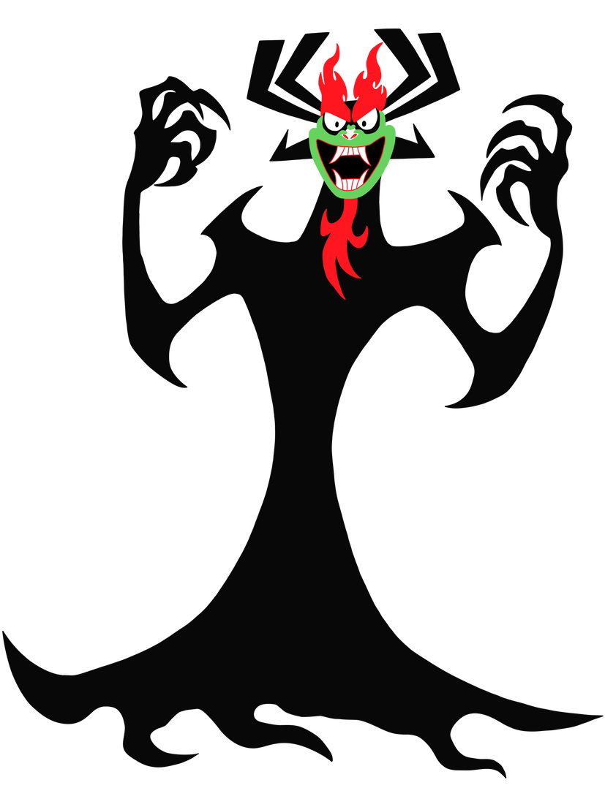

IA darkness falls to EarthA shapeless mass of evil, older than empires, takes root and becomes Aku, the Shogun of Sorrow.
A prince, a sword forged by gods, and a portal that threw him into a future ruled by the evil he swore to destroy.
Brush over Jack to reveal AkuClick the sky to draw the blade
Every episode opened the same way: the shapeshifting master of darkness explaining, with enormous self-satisfaction, how he got rid of the one warrior who could stop him. Here is that story in four panels.

I
II
III
IVGotta get back, back to the past.From the opening theme
One stroke from victory, Aku tears open time and throws the samurai into a future where his rule is complete.
The one weapon Aku cannot survive. Drag to turn it in the light. Click or tap it to draw the blade, and watch the wind split around the edge.
The 3D sword needs WebGL, which this browser has turned off.
Ten moments from Aku's birth to the last scene of the series. Pick one, or use the arrow keys. The red line marks the portal.
Every person he stops to help may cost him a road home. He stops anyway.
Select a character to open their dossier.
Every frame on this page, floating in one space. Drag to look around, zoom in to get closer, and click a frame to open it full size.

Aku is pure evil with stage presence. He shapeshifts into anything he likes, rules the future through bounty hunters and robot armies, and talks to his own reflection a lot. Voiced by Mako in seasons 1 to 4 and by Greg Baldwin in season 5.
Before the sword comes the breath. Find the calm, then cut.
Sixty-two episodes across deserts, neon cities, oceans and valleys like this one.
Episodes are numbered in Roman numerals. Seasons 1 to 4 aired on Cartoon Network from August 2001 to September 2004. Season 5 aired on Adult Swim's Toonami block from March to May 2017, and its numbering jumps ahead to XCII to account for the fifty lost years.
Ten questions about the show and the people who made it. Your rank comes at the end.